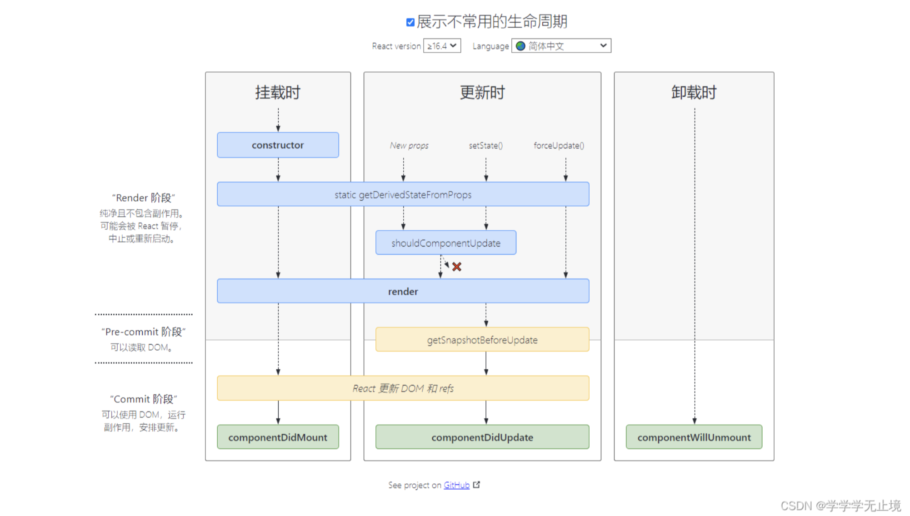

温故而知新（React）
对组件化的理解
组件将应用的 UI 拆分成独立的、可复用的模块。
组件化的核心，就是两点:
封装
共同的逻辑
复用
通过属性（props）的传递，展示不同的模板内容
定义组件的两种方式
class component
条件：
class 继承自 React.Component(PureComponent)
class 内部必须定义 render 方法。
如果自定义了 constructor 函数，必须调用 super(props) 方法。调用super实际上是调用了 React.Component 这个 class 的 construcor 方法，用来完成 React 组件的初始化工作。
function component
组件的生命周期
单组件生命周期
componentDidMount
在 componentDidMount 生命钩子中，组件已经挂在，真实 DOM 也已经渲染完成，是调用服务器 API 最安全的地方。
componentWillMount 也可以获取服务器 API，因为越早拿到数据，越能更快的返回组件并展示正确的组件。但是当组件在服务器端渲染时，componentWillMount 会被调用两次，一次是在服务器端，一次是在浏览器端。而 componentDidMount 能保证在任何情况下只会被调用一次。
componentWillReceiveProps
props 的更新，会触发子组件的 componentWillReceiveProps 生命周期方法。
如果需要用 props 中的某个属性和服务端交互，componentWillReceiveProps 就很合适。
父子组件生命周期执行顺序
父子组件生命周期执行顺序和 Vue 的一样。
父子组件加载时：
1 | |
父组件更新时
1 | |
卸载子组件
1 | |
React 中 JSX 本质是什么？
本质还是 JS。
JSX 是 JavaScript 语法扩展，可以让你在 JavaScript 文件中书写类似 HTML 的标签。
React 中 JSX 只是一种表现形式，可以让你以一种更方便的方式动态的创建组件。JSX 最终会被转化成 JS 代码。
JSX 语法对 React 来说只是 React.createElement 的语法糖。所有的 JSX 语法最终都会被转换成 React.createElement 函数的调用。
1 | |
这也就是为什么我们代码中有时候并未使用 React，但是必须导入的原因。
为什么多个 JSX 标签需要被一个父元素包裹？
JSX 虽然看起来很像 HTML，但在底层其实被转化为了 JavaScript 对象，你不能在一个函数中返回多个对象，除非用一个数组把他们包装起来。
这就是为什么多个 JSX 标签必须要用一个父元素或者 Fragment 来包裹。
为什么操作 DOM 比操作 JS 要慢，且更耗性能？
主要是在两个方面：
跨模块通信。DOM 的实现和 JS 的实现属于两个独立的模块，跨模块交互性能消耗挺高。
耗浏览器性能。当我们操作 DOM，通常会引起浏览器的重绘和回流。
JSX 和 vDom 的关系？
JSX 需要转为成 html，必须先转化为 js，通过 vdom 来描述 html 关系，最终渲染为 html.
React.createElement 和 h 函数，都生成 vNode.
ReactDOM.render 和 setState 时，都需要 patch。
key 的作用
React 中 key 属性是用来标记列表中的每个元素，当列表数据发生变化时，React 在做 diff 时就可以通过 key 知道哪些元素发生了变化，从而只重新渲染发生变化了的元素，提高渲染效率。
state 和 props 的区别是什么
state 和 props 都和组件的 UI 渲染有关，它们的变化都会触发组件的重新渲染，但是 props 对于使用它的组件来说是只读的，是通过父组件传递过来，要想修改 props，只能通过父组件修改。而 state 是组件内部自己维护的状态，可变的。
setState 合适的时候合并更新
setState 组件大部分情况下是异步的，调用后不会立即更新组件的 state，而是将 state 的更新加入到更新队列中，然后在合适的时候批量处理这些更新。
当你传入对象并调用了多次 setState，这几个对象会被合并，执行结果拿最后那个 setState。
1 | |
类似于将三个 count 放到同一个对象上：
1 | |
所以只剩下一个 count 了，只会累加一次，count = 1。
如果给 setState 传入一个函数，React 不会将多个更新合并为一个处理。
1 | |
最终 count 是 2.
setState是同步的还是异步的？
setState 大部分情况下是
异步的调用 setState 时，组件的 state 并不会立即改变，setState 只是把要修改的状态放入到一个队列中，React 会优化真正的执行动机。
并且出于性能考虑，可能会将多次 setState 的状态修改合并成一次状态修改。
在 setTimeout 中是同步的
自己定义的 DOM 事件中，setState 是同步的
1 | |
在 setTimeout 中是同步的
1 | |
自己定义的 DOM 事件中，setState 是同步的
1 | |
看道面试题：初始值 count = 0，查看打印结果。
1 | |
问题：为何需要异步？
setState 可以多次设置，如果设置成同步，每一次 setState 都触发更新渲染，会比较 消耗性能。设置成异步，可以将需要更新的数据集中起来，一次性渲染。
而且，js 是单线程的，执行 js 过程和 DOM 渲染是互斥的，也就是说 js 执行时，DOM 的渲染是被阻塞的，DOM渲染时拿到的结果就是 js 执行完毕的结果。
假设 setState 是同步的，我们想要将 count 累加到 10，设置了 10 次 setState，因为 DOM 渲染被阻塞了，只能等待 js 执行完毕才会渲染 DOM，所以用户是看不到 count 从 1 累加到 10 的这个过程，最终 js 执行完毕，DOM 会直接渲染出 10。
- Vue 渲染 DOM 也是异步的，可以通过 $nextTick 可以获取最新的数据
为什么setState在 setTimeout 和自定义事件中是同步的？
与 batchUpdate 机制有关。
依据是判断 isBatchingUpdates 是 true or false.
dirtComponent ?
state 与 不可变值
React采用函数式编程的不可变数据特性。
而在React中不可变值的意思就是：始终保持state的原值不变。
不要直接修改state，遇到数组或者对象，采用copy一份出去做改变。
在做性能优化时很重要。
1 | |
不可变值的目的
- 性能优化
在生命周期 shouldComponentUpdate 根据返回值决定是否需要重新渲染。因为父组件只要 state 或 props 更新了就会重新渲染，从而子组件也会更着渲染。
React会对新旧state和props进行比较，如果直接修改state去用于其他变量的计算，而实际上state并不需要修改，则会导致怪异的更新以及没必要的更新，因此采用这种方式是非常巧妙，且效率非常的高。
- 可追踪修改痕迹，便于排错
使用this.setState的方式进行修改state的值，相当于开了一个改变值的口子，所有的修改都会走这样的口子，相比于直接修改，这样的控制力更强，能够有效地记录与追踪每个state的改变，对排查bug十分有帮助。
React 事件
React 元素的事件处理和 DOM 元素的很相似，但是有一点语法上的不同：
React 事件的命名采用小驼峰式（camelCase），而不是纯小写。
<button onClick={activateLasers}>不能通过返回 false 的方式阻止默认行为。你必须显式地使用 preventDefault
所有事件挂在到 document 上
React并不是将click事件绑在该div的真实DOM上，而是在document处监听所有支持的事件，当事件发生并
冒泡至document处时，React将事件内容封装并交由真正的处理函数运行。
event 对象（合成事件）
React event 对象是 SyntheticBaseEvent，属于合成事件，模拟 DOM 事件的所有能力
可以通过 event.nativeEvent 获取到原生事件
1 | |
为何需要合成事件机制？
更好的兼容性和跨平台
挂在到 document，减少内存消耗，避免频繁的事件解绑
方便事件的统一管理
组件通信
props
ref（父组件获取到子组件实例）
1 | |
callback function（父组件传递方法给子组件）
利用事件冒泡机制
1 | |
兄弟组件通信（将数据提升到父组件中）
context（深层次组件通信，避免 props 层层传递）
1 | |
如果是函数组件，则无法使用 static contextType = ThemeContext; 这种形式，我们可以通过 ThemeContext.Consumer 将函数组件包裹起来。
1 | |
- Redux
受控组件和非受控组件
Portals（传送门）
可以将子组件渲染到父组件以外的地方去。比如常见的全局的 Modal 弹窗、全局的Message提示。
1 | |
异步组件
- import()
- React.lazy
- React.Suspense
1 | |
将大组件进行异步加载，提高用户体验。并且异步加载的组件，会被重新打一个 js 包出来。
在 Vue 中引入组件时，直接使用 import 函数导入即可实现异步加载组件。
性能优化 - SCU（shouldComponentUpdate）
默认返回 true
1 | |
为什么不可变值对 SCU 这么重要？？？
来看个错误的例子，下面这个例子会渲染 ul > li (1, 2, 3)，我们在 onPushList 中，通过 push 方法直接修改了 state.list。
然后在 shouldComponentUpdate 中，判断当前组件是否需要重新渲染。
你会发现，组件没有更新！！！
1 | |
为什么呢？？
这就是因为没有遵循数据的不可变原则的原因。
我们通过 push 方法直接对 list 增加了一个数值 4，此时 this.state.list = [1, 2, 3, 4]，但是 SCU 中判断逻辑也是用的 this.state.list，它和 nextState.list 是相同的，指向地址一样，数值一样，那么 SCU 返回了 false，组件不会重新渲染！
正确写法：
1 | |
性能优化 - pureComponent
继承自 pureComponent 的组件，相当于在 SCU 中实现了 浅比较。
性能优化 - React.memo
优化函数组件。
React.memo 包裹一个函数组件，来对它的 props 进行浅比较。等效于 PureComponent，但它只比较 props。（也可以通过第二个参数指定一个自定义的比较函数来比较新旧 props。如果函数返回 true，就会跳过更新。）
公共逻辑复用 HOC & render props
组件公共逻辑的抽离
mixin
1 | |
调用 componentClassMixins 方法，第一个参数是我们的组件，第二个参数传我们编写的 mixin
HOC
高阶组件是参数为组件，返回值为新组件的函数。
当多个组件都需要某个相同的功能， 使用高阶组件可以减少重复实现。
比如有很多组件都想要获取 当前鼠标位置 的功能。
1 | |
Vue 如何实现高阶组件
render props
术语 “render prop” 是指一种在 React 组件之间使用一个值为函数的 prop 共享代码的简单技术
组件接收一个
值为函数的 prop，动态 prop。render props 函数返回一个组件
其实 render props 和 HOC 很相像，可以随意转换。
以 HOC 中 withMouse 为例，将其改为 render props
1 | |
App 使用 Mouse 组件，App 组件内部就可以通过 props 实时获取到 mouse 的位置了。
1 | |
render prop 一个有趣的事情是你可以使用带有 render prop 的常规组件来实现大多数高阶组件 (HOC)。 例如，如果你更喜欢使用 withMouse HOC而不是
Diff 算法
每次组件的状态或属性更新，组件的 render 方法都会返回一个新的虚拟DOM，用来描述新的 UI 结构。
正常情况下，比较两个树形结构差异的算法的时间复杂度是O(N^3)，这个效率显然是无法接受的。
React 提出了两个假设，优化了树形结构差异的算法时间复杂度，O(N)：
如果两个元素的类型不用，那么它们将生成两棵不同的树。
为列表中的元素设置 key 属性，标识对应的元素在多次 render 过程中是否发生变化。
React 比较两棵树是从树的根节点开始比较的，比较规则如下：
当根节点是不同类型时，React 会认为新的树和旧的树完全不同，不再比较，直接替换掉旧的树
当根节点是相同的 DOM 元素类型时，React 会保留根节点，而比较根节点的属性，然后只更新那些变化了的属性。
虚拟 DOM 的节点类型分两种：
DOM元素类型：比如 div、p..
React 组件类型：比如自定义的 React 组件。
当根节点是相同的组件类型时，对应的组件实例不会被销毁，只会执行更新操作，同步变化的属性到虚拟 DOM 树上。
比较完根节点后，React 会已同样的原则继续递归比较子节点，每一个子节点相对于其层级以下的节点来说又是一个根节点。
key
当一个节点有多个子节点时，默认情况下，React 只会按照顺序逐一比较两个树上对应的节点。
比较下面两棵树，两棵树前面的两个 li 都相同，最终只会插入一个新的节点。
1 | |
如果 <li>third</li> 是被插入到子节点的第一个位置，那么按照顺序比较的话，差异就大了，导致每一个节点都被修改。
引入 key 来标识节点，React 会根据 key 来匹配子节点，只要子节点的 key 值没有变化，React 就会认为这是同一个节点。
1 | |
有了 key 做标识，React 就在 diff 时就会知道 first 和 second 这两个元素没有发生变化，所以只会在这两个元素前面插入 third 元素。
所以 key 的使用减少了 DOM 操作，提高了 DOM 的更新效率。
React 和 Vue 的区别
相同点：
都支持组件化
数据驱动视图
都使用 vDom 操作 DOM
区别：
React 使用 JSX，Vue 使用 template
React 函数式编程，Vue 声明式编程
ReactHooks缺点 —— 状态不同步问题
1 | |
问题：
count = 0，点击异步执行后，再点击立即执行表示 count + 1，3秒后，打印结果为 0。
原因：
函数的变量保存在运行时的作用域里，在点击 异步执行 按钮的时候，执行函数的内部作用域将变量 count 复制了一份，无论 count 在这 3 秒内如何变化，定时器的回调函数读取的 count 还是原来的值。
React Fiber
React Fiber 是 React 中的一种新的协调引擎（reconciliation engine），它是从 React 16 版本开始引入的重大改进。
React Fiber 的目标是提升 React 应用的性能、实现更好的并发控制，以及支持新的特性和能力。
传统的 React 渲染过程是基于递归的，当组件层级很深或组件树很大时，可能会出现长时间的渲染阻塞，导致用户界面的卡顿和不流畅。React Fiber 的目标是将渲染过程切割成一系列可中断的任务单元，可以通过优先级调度和时间片分配来控制任务的执行顺序，从而实现更细粒度的控制和更好的用户体验。
React Fiber 的架构使得在渲染过程中可以中断、暂停和恢复渲染任务，这为实现异步渲染、增量更新和并发渲染提供了基础。它还支持 优先级调度，使得 React 能够根据任务的紧急程度动态地分配时间片，保证优先处理重要的任务，提高响应能力。
主要用到了两个原生的 API requesetAnimationFrame 和 requesetIdleCallback
为什么要 fiber
当我们触发了状态的更新，那么整个组件树会触发重新 渲染，而构建 DOM树是同步递归的过程，那么组件如果很庞大且嵌套很深的话，那么构建过程可能就很长了，就容易出现明显的卡顿，阻塞其他进程执行，甚至卡死浏览器。
优化：pureComponent，shouldUpdateComponent，useMemo，useCallback
指标不治本，还是需要 Fiber
generator 也可以实现
react 源码庞大，不适用 generator + yield
generator 内部有状态，可能后面的依赖前面的结果，后面的执行后，前面的又更新了，导致状态不可控。
基于 requestAnimationFrame 实现任务调度和时间切片

React Fiber 依赖了 requestAnimationFrame 这个 API，它是在浏览器环境中提供的用于执行动画的定时器函数。requestAnimationFrame 方法会在浏览器下一次重绘之前调用指定的回调函数，用于实现平滑的动画效果。
React Fiber 使用 requestAnimationFrame 来进行任务调度和时间切片。它利用 requestAnimationFrame 在浏览器空闲时间执行任务，以避免阻塞主线程，并提供更流畅的用户界面响应。
通过使用 requestAnimationFrame，React Fiber 可以将任务拆分为更小的单元，并在每个时间片段内执行一部分任务，以便将渲染过程分散到多个帧中，提高应用的性能和响应能力。
需要注意的是，requestAnimationFrame 是浏览器提供的 API，只能在浏览器环境中使用，无法在 Node.js 等非浏览器环境下运行。
requestAnimationFrame 原理是什么？
requestAnimationFrame 是浏览器提供的一个 API，用于在 下一次重绘（repaint）之前 执行回调函数，通常用于执行动画或其他需要与浏览器绘制同步的操作。
requestAnimationFrame 的工作原理如下：
当调用
requestAnimationFrame(callback)时，浏览器会在下一次重绘之前调用callback函数。重绘通常与显示器的刷新频率（一般是 60Hz）相匹配，即每秒触发约 60 次。浏览器会在每个重绘的时机执行回调函数，这样可以确保回调函数在最佳的时机执行，避免了执行频率过高或过低的问题。
callback函数中执行的操作通常包括更新动画帧、计算布局或执行其他需要与页面绘制同步的任务。如果在
callback函数中再次调用requestAnimationFrame，浏览器会安排下一次回调在下一次重绘之前执行，形成一个循环，从而实现动画的持续更新。
通过使用 requestAnimationFrame，可以有效利用浏览器的绘制时机，避免了过早或过晚执行动画帧的问题，提供了更平滑和高效的动画效果。同时，由于浏览器会自动调整重绘频率，节省了资源和电能的消耗。
requestAnimationFrame VS setInterval
- 更好的性能
requestAnimationFrame使用浏览器的刷新频率来执行回调函数，它能够在每一帧之前进行优化，避免不必要的绘制操作，以提高性能。而setInterval则是固定的时间间隔执行回调函数，无法充分利用浏览器的优化机制，可能导致过多的绘制操作，影响性能。
- 自动适应页面可见性
requestAnimationFrame会在页面不可见时自动停止执行，而 setInterval 会一直执行，无论页面是否可见。这样可以避免在后台标签页或不可见的页面上消耗不必要的计算资源。
当页面被切换到后台标签页、最小化窗口或者切换到其他应用程序时，浏览器会将页面标记为不可见状态。在不可见状态下，浏览器会暂停或减少对页面的渲染和计算资源的分配，以节省电量和提高性能。
- 更精确的时间控制
requestAnimationFrame的回调函数会在每一帧之前执行，时间间隔由浏览器决定，通常为16毫秒（60帧每秒），可以保证动画的流畅性。而setInterval的时间间隔是固定的，可能会因为JavaScript线程的阻塞、页面负载等原因导致回调函数的执行时间不准确。
- 避免掉帧现象
requestAnimationFrame能够自动调整帧率，如果浏览器性能较差无法达到60帧每秒，它会自动降低帧率，避免掉帧现象。而setInterval无法自动调整帧率，可能导致动画不流畅或卡顿。
如何判断任务的优先级？
应该是浏览器控制的吧，一帧内任务还没有执行完，控制权就交给浏览器去分配。
浏览器一帧内要做那些事情？
layout布局、绘制、执行 js、requestAnimationFrame
如果一帧内执行完了这些事情，剩余的时间，就用来执行 requestIdleCallback
一帧是多少 ms ？以 60 Hz 为例
每秒 60帧，每帧就是 1000/60 = 16.7ms
requestIdleCallback(callback, options)
window.requestIdleCallback() 方法插入一个函数，这个函数将在浏览器空闲时期被调用。这使开发者能够在主事件循环上执行后台和低优先级工作，而不会影响延迟关键事件，如动画和输入响应。
判断一帧内是否还有剩余时间，有的话，就用来执行 requestIdleCallback
requestIdleCallback 返回一个 ID，可以把它传入 Window.cancelIdleCallback() 方法来结束回调。
React 如何做权限控制？
Vue 中可以通过指令来做 v-auth
比如某个用户登录了之后，根据当前用户的角色来控制页面的显隐，以及对按钮的显隐控制？
在 React 中进行权限控制可以采用以下几种方式：
- 条件渲染（Conditional Rendering）：根据用户的角色或权限，通过条件判断来决定是否渲染某个组件或元素。例如，可以在组件的
render方法中根据用户角色来判断是否显示某个特定的组件或元素。
1 | |
- 高阶组件（Higher-Order Components）：通过创建高阶组件来封装权限控制的逻辑。高阶组件接受一个组件作为参数，并返回一个新的组件，新组件根据用户的角色或权限来决定渲染或包装传入的组件。
1 | |
- 权限控制组件（Authorization Component）：创建一个专门用于权限控制的组件，该组件在渲染过程中进行权限检查，并根据结果来决定如何渲染子组件。该组件可以通过 React 的上下文（context）来传递用户信息和权限信息。
1 | |
这些方法都可以根据用户的角色或权限来进行页面的显隐控制和按钮的显隐控制。具体使用哪种方法取决于你的项目需求和组件结构，选择最适合的方式进行权限控制。
参考文献
本博客所有文章除特别声明外，均采用 CC BY-SA 4.0 协议 ，转载请注明出处！